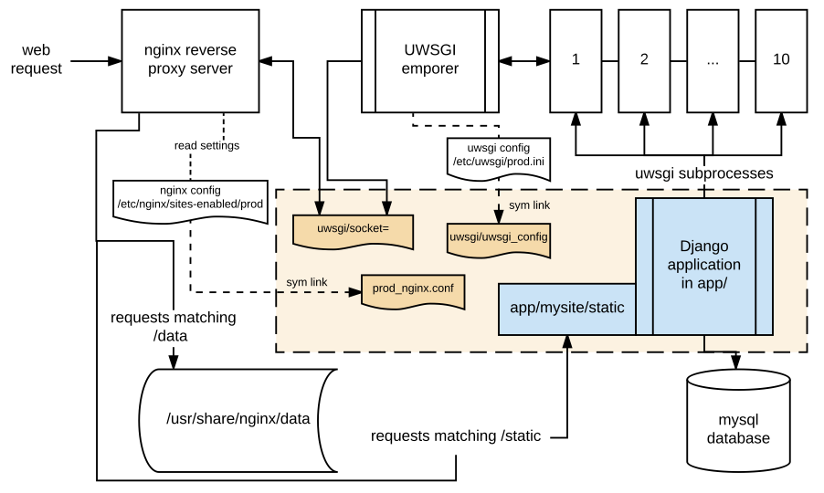
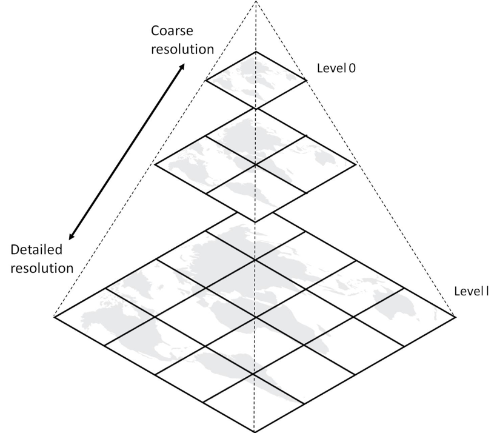

What: abstracting the data
MIDS W209: Information Visualization
John Alexis Guerra Gómez | john.guerra[at]gmail.com | @duto_guerra
Andy Reagan | andy[at]andyreagan.com | @andyreagan
https://johnguerra.co/lectures/MIDS_W209_Information_Visualization/02_What/
Andy Reagan | andy[at]andyreagan.com | @andyreagan
https://johnguerra.co/lectures/MIDS_W209_Information_Visualization/02_What/

Partially based on slides from Tamara Munzner
What we are going to learn
- Abstracting the data
- Types of datasets
- Types of attributes
- Sequential, diverging, cyclical
- Data aggregation (temporal and geo)
- Deriving new data
Abstracting the data
Why abstract the data?
- Different attribute types 👉 different representations
- Different dataset types 👉 different idioms available
What do you need to abstract?
- Dataset type: (e.g., table, network, temporal ...)
- Attribute types: (e.g. categorical, ordinal, quantitative)
- Ordering direction: (e.g. sequential, diverging, cyclical)
- Data availability: (e.g. dynamic, static)
Types of Datasets
+ Temporal!
Tables
- The vast majority of datasets
- Attributes (columns) + items (rows)
- Other dataset types are usually stored as a combination of tables
| price | brand | model | title_status | mileage | color | lot |
|---|---|---|---|---|---|---|
| 21500 | ford | f-150 | clean vehicle | 76876 | gray | 167783132 |
| 7500 | nissan | door | clean vehicle | 58126 | black | 167598085 |
| 10700 | chevrolet | trax | clean vehicle | 44280 | red | 167792666 |
| 23100 | dodge | charger | clean vehicle | 12265 | silver | 167735423 |
| 33800 | dodge | durango | clean vehicle | 15003 | black | 167734879 |
| 4140 | ford | door | clean vehicle | 40747 | white | 167656519 |
| 13900 | nissan | rogue | clean vehicle | 38760 | white | 167762102 |
| 15700 | ford | cutaway | clean vehicle | 75862 | white | 167780452 |
| 1150 | ford | door | salvage insurance | 123349 | red | 167652717 |
| 26100 | ford | f-150 | clean vehicle | 32149 | white | 167741409 |
| 14000 | ford | fusion | clean vehicle | 50513 | white | 167749355 |
| 22500 | ford | door | clean vehicle | 43646 | black | 167780692 |
File formats
Comma Separated File (CSV)
price,brand,model,title_status,mileage,color,lot
21500,ford,f-150,clean vehicle,76876,gray,167783132
7500,nissan,door,clean vehicle,58126,black,167598085
10700,chevrolet,trax,clean vehicle,44280,red,167792666
23100,dodge,charger,clean vehicle,12265,silver,167735423
33800,dodge,durango,clean vehicle,15003,black,167734879
4140,ford,door,clean vehicle,40747,white,167656519
13900,nissan,rogue,clean vehicle,38760,white,167762102
15700,ford,cutaway,clean vehicle,75862,white,167780452
1150,ford,door,salvage insurance,123349,red,167652717
26100,ford,f-150,clean vehicle,32149,white,167741409
14000,ford,fusion,clean vehicle,50513,white,167749355
22500,ford,door,clean vehicle,43646,black,167780692JSON
[
{
"price": 21500,
"brand": "ford",
"model": "f-150",
"title_status": "clean vehicle",
"mileage": 76876,
"color": "gray",
"lot": 167783132
},
{
"price": 7500,
"brand": "nissan",
"model": "door",
"title_status": "clean vehicle",
"mileage": 58126,
"color": "black",
"lot": 167598085
},
{
"price": 10700,
"brand": "chevrolet",
"model": "trax",
"title_status": "clean vehicle",
"mileage": 44280,
"color": "red",
"lot": 167792666
},
{
"price": 23100,
"brand": "dodge",
"model": "charger",
"title_status": "clean vehicle",
"mileage": 12265,
"color": "silver",
"lot": 167735423
},
{
"price": 33800,
"brand": "dodge",
"model": "durango",
"title_status": "clean vehicle",
"mileage": 15003,
"color": "black",
"lot": 167734879
},
{
"price": 4140,
"brand": "ford",
"model": "door",
"title_status": "clean vehicle",
"mileage": 40747,
"color": "white",
"lot": 167656519
},
{
"price": 13900,
"brand": "nissan",
"model": "rogue",
"title_status": "clean vehicle",
"mileage": 38760,
"color": "white",
"lot": 167762102
},
{
"price": 15700,
"brand": "ford",
"model": "cutaway",
"title_status": "clean vehicle",
"mileage": 75862,
"color": "white",
"lot": 167780452
},
{
"price": 1150,
"brand": "ford",
"model": "door",
"title_status": "salvage insurance",
"mileage": 123349,
"color": "red",
"lot": 167652717
},
{
"price": 26100,
"brand": "ford",
"model": "f-150",
"title_status": "clean vehicle",
"mileage": 32149,
"color": "white",
"lot": 167741409
},
{
"price": 14000,
"brand": "ford",
"model": "fusion",
"title_status": "clean vehicle",
"mileage": 50513,
"color": "white",
"lot": 167749355
},
{
"price": 22500,
"brand": "ford",
"model": "door",
"title_status": "clean vehicle",
"mileage": 43646,
"color": "black",
"lot": 167780692
}
]
Temporal
- Tabular + time-related attribute
- Aggregations
- Cyclical
- Events or intervals
- Seasonality patterns
Networks
- Nodes + links
- Attributes on both
- Network idioms
- Network analytics
How are networks stored?
- Two files
- JSON file
- Adjacency matrix
- Generated from any data
Trees
- Hierarchical data
- A subset of networks
- Deserves its own class!
- Tree idioms
- Can be created out of tables
How are trees stored?
- Table with path attribute
- JSON file
- Generated from any data
Geometry
- Location data (usually latitutde/longitude)
- 2D or 3D
- Inherent shape
- Points, routes, shapes
Fields
- Continuous
- Sampled
- Example: brain scan
Data availability
- Static 👉 data don't change
- Dynamic 👉 data are constantly updating (e.g., stock prices)
- For dynamic data, you will need a data endpoint
Dataset Storage
Compute vs Store
- Always a balancing act.
- Front end computation is faster than you may expect, while load times are user-dependent.
API basics
- API's are just HTTP/HTTPS endpoints like any other web page.
- Response headers can indicate expected file type returned.
- Demo: hit hedonometer.org/api/v1/happiness/?format=json&title=en_all&date__gt=2020-05-01&limit=10
Connecting to a database
- D3 needs an API (Flask or likewise).
- Python/R: many options (sqlalchemy, native clients, etc).
- Tableau built-in: live vs extract.
Case studies for complex data processing
- MapD.
- Hedonometer.
- imMens.
- Crossfilter.
MapD (now Omni-Sci)
- Original white paper.
- Computation done server side on custom hardware: GPU memory.
- Interacts with front end via API.
- Fast on a scale that's unimaginable in the front-end alone.
Hedonometer
- Based on 10% decahose feed of all Tweets, ~250-500GB uncompressed per day.
- Processing of Tweets to word count dictionaries done in parallel on 200+ node cluster.
- Jobs in 15 minute increments, run hourly.
- Webserver consumes these dictionaries, sums daily (Jenkins).
- Time series data is precomputed, fixed-length word count vectors precomputed for each day.
Hedonometer
imMens
- Based on binned aggregation.
- Precomputes multivariate data projections and store these as data tiles.
- Front-end dynamically loads appropriate data tiles and uses WebGL for data processing and rendering.
Tiled backend
Crossfilter
- Purely front-end.
- Hashed lookup optimized for filter operations in-memory.
- Scales to 100's of thousands of records.
Summary: questions to ask
- Where is the data?
- What format is it in?
- How big is the data?
- How complex or computationally intensive is the processing needed?
- Never forget ethics: was it collected with consent for this use?
Types of Attributes
Categorical
- No order
- E.g., names, countries, types
- Must be represented with visual channels that don't convey order
Ordinal
- Has implicit order
- But, you can't do arithmetic
- Can even be numerical
- E.g., t-shirt sizes, school years, rankings
Quantitative
- Also ordered
- You can perform arithmetic
- Can be divergent or sequential
- E.g., age, temperature, earnings
Ordering direction
Sequential
- The is a full range with a clear minimum
- You can perform arithmetic
- E.g., age, goals ⚽️, price 💰
Divergent
- There is a middle point
- And two opposite directions
- Sometimes the middle point is not zero
- E.g., temperature, earnings, political affiliation index
Cyclical
- There is a cycle in the data
- No starting point (?)
- Can be represented with cyclical channels
- E.g., Days of the week, hours in the day
Data Aggregation
Aggregating Spatial data
E.g., count votes by:
- County
- City
- State
- Country
- Zipcode? Can span multiple counties 🤷
- Custom areas
Aggregating Temporal data
By truncating the date
- 2020 June 27 5:25PM
- 2020 June 27 5:00PM
- 2020 June 27
- 2020 June
- 2020 Q1
- 2020
Take a look at the date object
Aggregating Temporal data
By extracting parts of the date
- 2020 June 27 5:25PM
- Week 26 of the year
- 5:00 - 6:00 PM
- Saturday
- June
Practice
Introduction to JS
JSON vs. CSV
Comma Separated File (CSV)
price,brand,model,title_status,mileage,color,lot
21500,ford,f-150,clean vehicle,76876,gray,167783132
7500,nissan,door,clean vehicle,58126,black,167598085
10700,chevrolet,trax,clean vehicle,44280,red,167792666
23100,dodge,charger,clean vehicle,12265,silver,167735423
33800,dodge,durango,clean vehicle,15003,black,167734879
4140,ford,door,clean vehicle,40747,white,167656519
13900,nissan,rogue,clean vehicle,38760,white,167762102
15700,ford,cutaway,clean vehicle,75862,white,167780452
1150,ford,door,salvage insurance,123349,red,167652717
26100,ford,f-150,clean vehicle,32149,white,167741409
14000,ford,fusion,clean vehicle,50513,white,167749355
22500,ford,door,clean vehicle,43646,black,167780692JSON
[
{
"price": 21500,
"brand": "ford",
"model": "f-150",
"title_status": "clean vehicle",
"mileage": 76876,
"color": "gray",
"lot": 167783132
},
{
"price": 7500,
"brand": "nissan",
"model": "door",
"title_status": "clean vehicle",
"mileage": 58126,
"color": "black",
"lot": 167598085
},
{
"price": 10700,
"brand": "chevrolet",
"model": "trax",
"title_status": "clean vehicle",
"mileage": 44280,
"color": "red",
"lot": 167792666
},
{
"price": 23100,
"brand": "dodge",
"model": "charger",
"title_status": "clean vehicle",
"mileage": 12265,
"color": "silver",
"lot": 167735423
},
{
"price": 33800,
"brand": "dodge",
"model": "durango",
"title_status": "clean vehicle",
"mileage": 15003,
"color": "black",
"lot": 167734879
},
{
"price": 4140,
"brand": "ford",
"model": "door",
"title_status": "clean vehicle",
"mileage": 40747,
"color": "white",
"lot": 167656519
},
{
"price": 13900,
"brand": "nissan",
"model": "rogue",
"title_status": "clean vehicle",
"mileage": 38760,
"color": "white",
"lot": 167762102
},
{
"price": 15700,
"brand": "ford",
"model": "cutaway",
"title_status": "clean vehicle",
"mileage": 75862,
"color": "white",
"lot": 167780452
},
{
"price": 1150,
"brand": "ford",
"model": "door",
"title_status": "salvage insurance",
"mileage": 123349,
"color": "red",
"lot": 167652717
},
{
"price": 26100,
"brand": "ford",
"model": "f-150",
"title_status": "clean vehicle",
"mileage": 32149,
"color": "white",
"lot": 167741409
},
{
"price": 14000,
"brand": "ford",
"model": "fusion",
"title_status": "clean vehicle",
"mileage": 50513,
"color": "white",
"lot": 167749355
},
{
"price": 22500,
"brand": "ford",
"model": "door",
"title_status": "clean vehicle",
"mileage": 43646,
"color": "black",
"lot": 167780692
}
]
Array functions (map, filter, sort)
http://learnjsdata.com/group_data.htmlNesting, Folding, Pivoting, etc. in JS
http://learnjsdata.com/group_data.htmlNesting, Folding, Pivoting, etc. in Python
Nesting, Folding, Pivoting, etc. in Tableau?
Serving data from the back-end (Introduction to Flask)
What we learned
What we learned
- Abstracting the data
- Types of datasets
- Types of attributes
- Sequential, diverging, cyclical
- Data aggregation (temporal and geo)